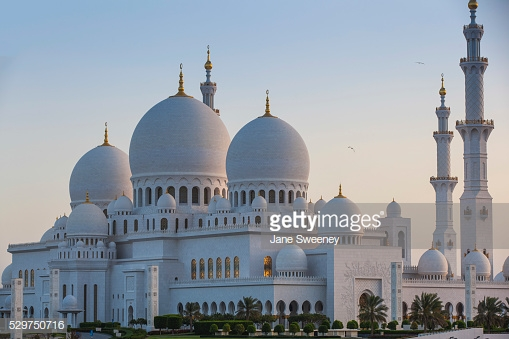

Ensoleillée toute l'année, située entre le désert et la mer chaude du golfe d'arabie,
Dubaï est appréciée pour ses plages de sable fin, son soleil hivernal et les virées
en 4*4 dans les dunes de sable. Non moins connue mais tout aussi intéressante, la capitale
des Emirats Arabes Unis réserve elle aussi son lot de richesses et d’incontournables.
Le temps d’une excursion au départ de Dubaï, partez à la découverte de cette ville reine du
pétrole qui fascine chaque voyageur qui franchit ses portes. La question est, par où allez-vous commencer ?
Si sa station de ski suffit à en mettre plein les yeux, Dubaï Mall réserve bien plus à ses visiteurs. Symbole phare de la ville, le centre commercial n’est autre que le centre le plus grand du monde. Et pour cause, il héberge pas moins de d’une dizaine de centre commerciaux dans ses 1 million de m² , soit 1200 boutiques ! Parmi les incontournables et outre ses magasins luxueux, on retrouve le plus grand aquarium du monde, un cinéma de 22 salles, l’hôtel The Adress Dubaï Mall, ainsi qu’une patinoire olympique. Sans nul doute donc, si vous passez les portes de ce lieu pour le moins unique au monde, vous n’aurez pas le temps de vous ennuyer.
Marché de l'Or
Visiter Dubaï sans passer par ses richesses à proprement parler est pour ainsi dire,impensable. Au delà des hôtels, boutiques et attractions démesurés, la ville héberge le plus grand marché d’Or… au monde ! Toujours à Deïra, profitez de votre balade pour découvrir ce lieu unique et surtout authentique où passionnés, curieux, locaux et touristes marchandent l’opulence avec une marchandise oscillant entre 18 et 22 carats. Cette même marchandise qui est d’ailleurs scrupuleusement approuvée par l’Etat avant sa mise en vente, de façon à authentifier les achats. Si l’or a la main mise, les pierres précieuses, l’argent mais aussi le diamant se sont fait une place sur les stands du marché, l’habillant un peu plus d’abondance.
Mosquée de Jumeirah
Les non-musulmans sont rarement autorisés à voir l’intérieur d’une mosquée, mais à la mosquée de Jumeirah, le projet « Open Doors. Open Minds » (portes ouvertes, esprits ouverts) vous permet de la visiter. L’idéal est de se joindre à une visite guidée car vous pourrez non seulement découvrir le vaste intérieur de cette merveille architecturale de style fatimide, mais vous pourrez également demander ce que vous voulez au guide, que ce soit à propos de la culture locale ou de l’Islam lui-même.

Un safari dans le désert
Aventuriers dans l’âme, ne cherchez plus que faire à Dubaï pendant voter séjour ! En tant que porte d’entrée du désert, la ville est dotée de quelques activités sportives à expérimenter au fil des dunes. En voiture ou à dos de chameau, profitez d’un safari pour découvrir les paysages désertiques, dîner au milieu de nulle part, dormir à la belle étoile ou rencontrer les Bédouins. Vous pouvez aussi déguster un barbecue dans le sable ou vous essayer au sandboarding, le surf du désert. Profitez de cet instant pour apprécier le silence absolu du désert, face au coucher du soleil. Dépaysement garanti !
Al quoz
Plutôt discret, souvent dans l’ombre de l’extravagance, le patrimoine artistique de Dubaï mérite pourtant le détour. Pour le découvrir, rendez-vous à Al Quoz, le quartier culturel et artistique par excellence qui séduit les amateurs de design comme les passionnés de contemporain. En véritable scène, le quartier met en lumière des galeries d’art où jeunes pousses et talents incontestés y expriment leur travail. Outre les expositions, Al Quoz accueille aussi des événements culturels, des concept-stores, des bars et autres restaurants bio et vegan. Ou comment visiter Dubaï sous un autre angle !